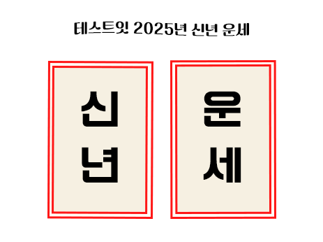

성격
얼굴
그외

시작하기
출생 연도
선택
출생 월
선택
출생 일
선택
출생 시간
선택
모름
자시 (23:00 - 00:59)
축시 (01:00 - 02:59)
인시 (03:00 - 04:59)
묘시 (05:00 - 06:59)
진시 (07:00 - 08:59)
사시 (09:00 - 10:59)
오시 (11:00 - 12:59)
미시 (13:00 - 14:59)
신시 (15:00 - 16:59)
유시 (17:00 - 18:59)
술시 (19:00 - 20:59)
해시 (21:00 - 22:59)
신년 운세 확인하기
사주 분석 중...